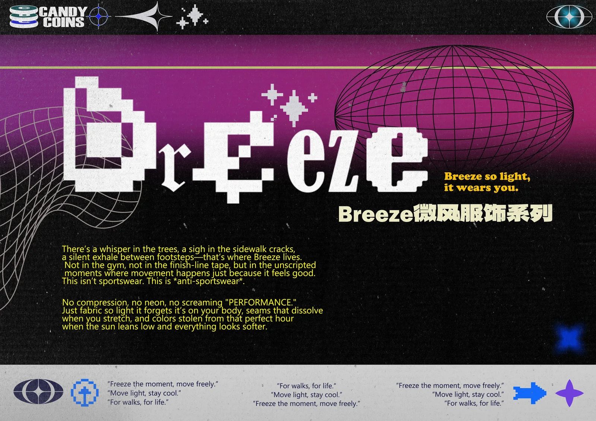
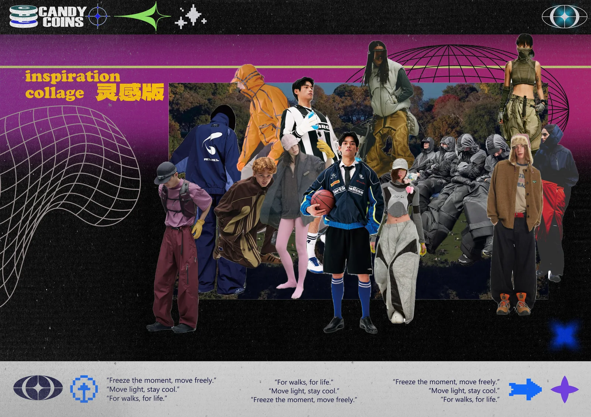
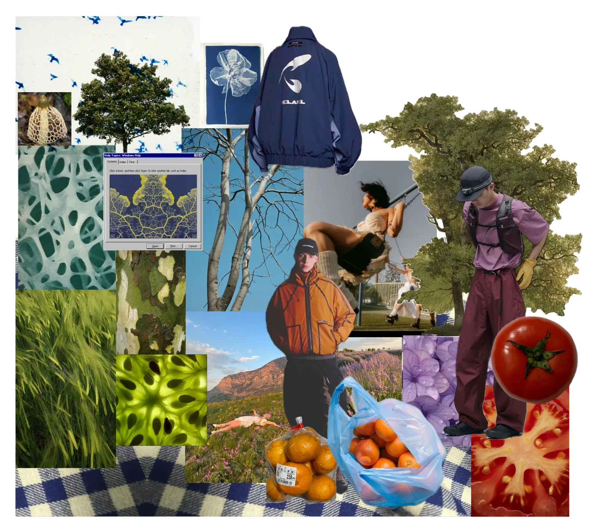
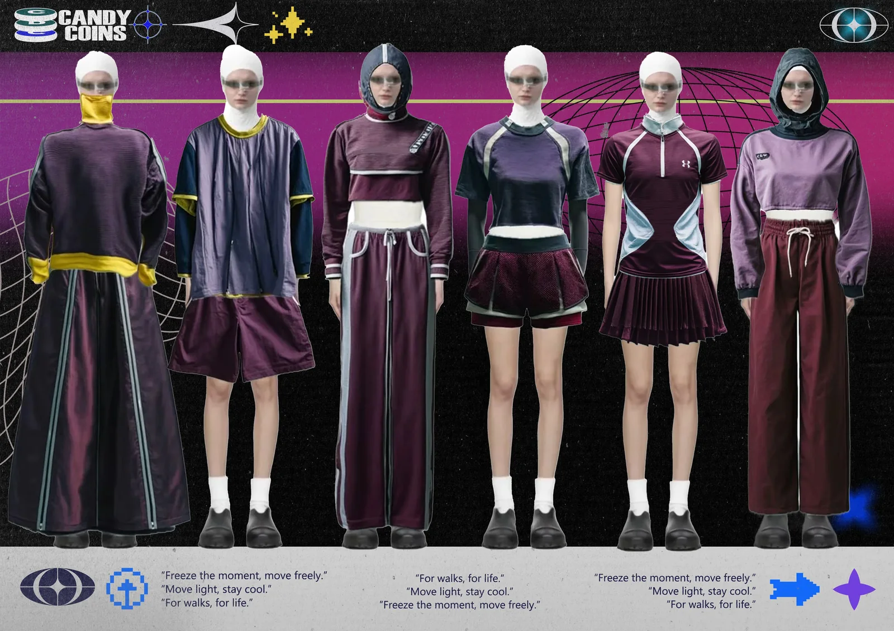
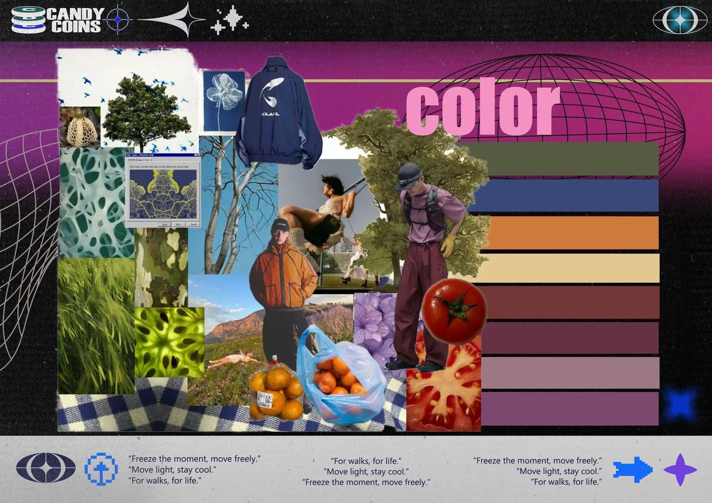
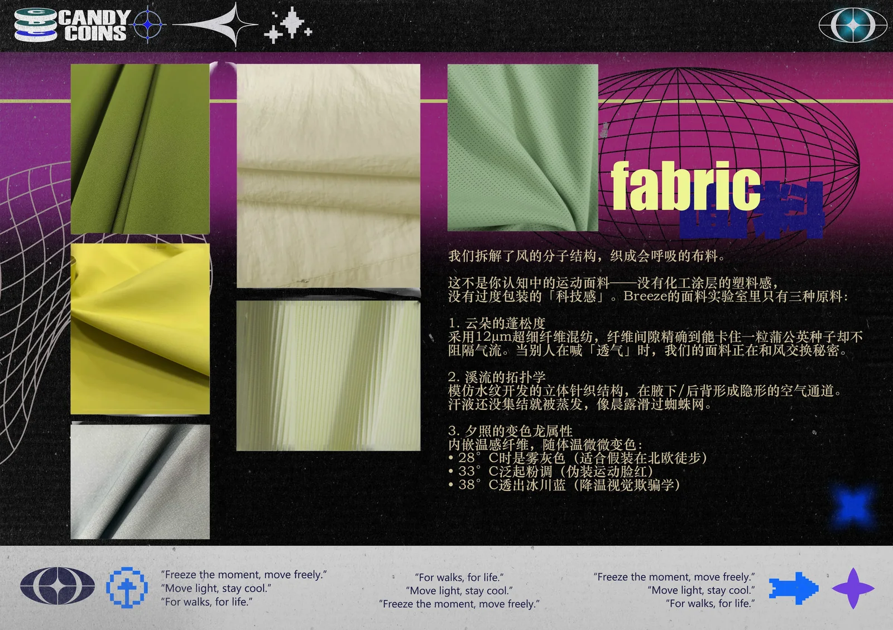

Breeze 微网服饰系列
Inspiration Board
自然的孔隙，进入身体与风之间。
树木、网状结构与日常物件构成最初的视觉线索；户外服装的包裹感，则把这些形态带回身体与行动。


Breeze so light, it wears you.
不为冲线而设计。
运动不必总是关于速度和胜负。这个系列从日常行走、街道缝隙与风的流动出发，把轻盈、透气与松弛感放进六套服装。
宽松轮廓、微网质感和覆盖式结构共同构成一组可以自由活动，也可以停下来感受身体的服装。
Full Collection
完整系列。

Color / Fabric
色彩在自然与运动之间过渡。
灰紫与酒红压低运动感的锋利度，冷蓝、米黄和橙色作为间歇信号；网眼、半透明与表面肌理让轻盈不只停留在颜色里。


Pattern System
从自然结构到连续纹样。
保留图案总版与四方连续成稿，集中呈现形态提取、色彩变化和面料尺度上的重复关系。